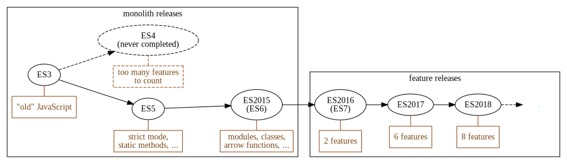
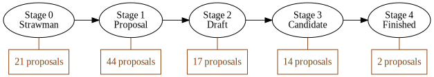

Baseline
common groundSections in this chapter
ECMAScript
JS vocabulary
The ECMASCript versions:

The TC39 process:

Current proposal count (as of 2018-11-07):

There's a (crude) proposal overview at https://es‑overview.netlify.com/.
Functional programming
Jumping down the rabbit hole
JavaScript is (almost) a functional language, which modern JS developers make frequent use of.
We'll now walk through a quick example to make sure we understand the power of this paradigm!
So - since functions are first class citizens, we can send them around just like any value.
Which also means that a function can take, and/or return, other functions! Such a function is called a higher order function.
As a contrived example, say we have this function:
let spam = function() {
console.log("SPAM!");
};
And then we have this higher order function:
function repeater(func, times) {
for (let i = 0; i < times; i = i + 1) {
func();
}
}
If we invoke repeater like this:
repeater(spam, 3);
We would see this in the console:
"SPAM!"
"SPAM!"
"SPAM!"
To show we can also return new functions, take a look at this beauty:
function multiplier(func, times) {
return function() {
for (let i = 0; i < times; i = i + 1) {
func();
}
};
}
Did you see the difference? multiplier doesn't execute the parameter function, but returns a new function!
let tripleSpam = multiplier(spam, 3);
If we execute the returned function we get the triple spam:
tripleSpam(); // SPAM! SPAM! SPAM!
Functional programming is a really powerful tool, and something that is likely to get you hooked once you have learned it. We warmly encourage you to explore the subject!
Map and reduce
the functional cornerstones
For applied functional programming, there are two list-operating tools that have a very central position:
- aThe
mapmethod - bThe
reducemethod
Let's take a look at both of these!
First, map. It takes a list and an iterator function as arguments, and returns a new list.
The iterator function that we pass in is called with each element and the index of that element, and it should return a new element to be used instead:
Here's an example. What will this call return?
let list = ["David", "Carl", "Eric"];
let newList = list.map(function(elem) {
return elem + "y Mc" + elem + "face";
});
Yup, newList will now equal this:
["Davidy McDavidface", "Carly McCarlFace", "Ericy McEricface"];
In essence, .map will create a new list of the same length, where each element is individually transformed by the iterator.
Now for .reduce! It is more powerful, but also harder to grasp.
Similar to .map it takes a list and an iterator, but also a seed value. Unlike .map it doesn't necessarily return a list, instead it can return any value.

The iterator function is called with each element and the current value (sometimes called memory or accumulator), and returns a new value.

The seed that we passed in to .reduce is used as the current value for the first iterator call.
The result of the .reduce call is whatever is returned from the last iterator call.
In other words, it looks like this (for a 3-item list):
Here's a classic example - what is something?
let list = [{ name: "shovel", price: 27 }, { name: "bucket", price: 14 }];
let something = list.reduce(function(mem, elem) {
return mem + elem.price;
}, 0);
let something = list.reduce(function(mem, elem) {
return mem + elem.price
}, 0);
We get the total cost of the items.
A somewhat tougher example, with more modern syntax:
let words = ["Bucket", "Pipe", "Flower"];
let something = words.reduce((mem, elem) => ({
...mem,
[elem.length]: (mem[elem.length] || 0) + 1
}), {});
It returns an object which counts how many words of each length the list contains:
{
4: 1,
6: 2
}
Promises
Give me your word!
In JS we usually deal with asynchronisity via callbacks:
const bigRedBtn = document.getElementById("doomsdayBtn");
const clickHandler = e => alert("BOOM");
bigRedBtn.addEventListener("click", clickHandler); // <--- callback!
A callback is simply a function that will (potentially) call back at some point in the future.
Sometimes we need to call back with success or failure. NodeJS popularised the following pattern:
const fileHandler = (err, buffer) => {
if (err) {
throw new Error("OH NO :/ " + err);
}
console.log("file contents: ", buffer.toString());
};
fs.readFile(filepath, fileHandler);
A Promises is an alternative solution to handling future success/failure.
Instead of taking a callback, an async operation can syncronously return a promise that will eventually resolve or reject.
This translates to the following state transition:

The user...
- synchronously gets the promise
- attaches callbacks for success and/or failure.
So instead of this...
readFile(path, (err, data) => {
if (err) handleError(err);
else handleData(data));
}
...we do this...
const promise = readFile(path);
promise.then(handleData);
promise.catch(handleError);
...or simply chain it like this:
readFile(path)
.then(handleData)
.catch(handleError);
So a whole complicated abstraction just to save a few characters?!
Yes.
But more complex asynchronous flow control patterns can become much easier with promises.
For example, parallellising:
let data = {};
const maybeFinalize = (resp, which) => {
data[which] = resp;
if (data.A && data.B && data.C) {
finalize(data.A, data, B, data.C);
}
};
fetch(urlA, resp => maybeFinalize(resp, "A"));
fetch(urlB, resp => maybeFinalize(resp, "A"));
fetch(urlC, resp => maybeFinalize(resp, "A"));
With promises that could become:
Promise.all([fetch(urlA), fetch(urlB), fetch(urlC)]).then(finalize);
Promises are created like this:
const promise = new Promise((resolve, reject) => {
setTimeout(() => {
resolve("3 seconds have passed!");
}, 3000);
});
Note that you rarely need to do that.
Mostly we'll just use API:s that return promises.
bigRedBtn.addEventListener("click", clickHandler);
But, when a callback can be called more than once, like a clickhandler...
...then promises doesn't make sense?
Indeed not! The promise can only represent a single asynchronous value.
To represent many async values we can use a stream:

But that's a totally different story!
Finally, you should know that promises are contested.
Read more in the Broken promises blogpost.
Asynchronous functions
Async await
When we deal with more than one promise, things quickly get hairy:
function getInvocationOdds() {
return fetch("/api/alignedPlanet").then(planetId => {
return fetch(`/api/planetFavourability/${planetId}`).then(favourability => {
return favourability * 100;
});
});
}
Using async functions, this can be rewritten as:
async function getInvocationOdds() {
const planetId = await fetch("/api/alignedPlanet");
const favourability = await fetch(`/api/planetFavourability/${planetId}`);
return favourability * 100;
}
An async function...
- is defined with the
asyncprefix - lets you wait for promises with
yield - returns a promise
In other words, they let us write asynch code more neatly.
More newish features can be found in the ES2015 appendix.